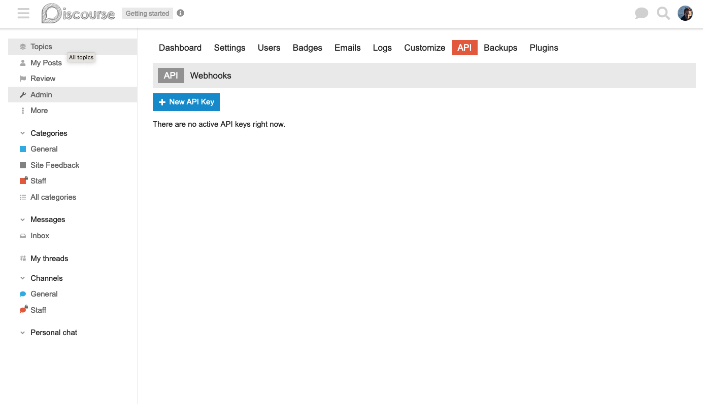

Connecting KinesinLMS to the Forum Service
KinesinLMS is designed to support multiple forum providers, but currently only supports Discourse. In this section we describe how to configure KinesinLMS to use Discourse as its forum provider.
You should already have a Discourse instance running. The first step is to log into Discourse as the admin user and set up the necessary keys and webhooks.
There are three main integration points between KinesinLMS and Discourse: - API for setup when a course is loaded - SSO for logins - Callback for forum activity to alert KinesinLMS of user post activity.
Here we set up these integration points.
General Settings
Before we start, make sure you have some basic "required" Discourse settings established.
In Admin > Settings 'required' tab, set the fields to the best of your ability.
- Set site description to something like "My site's forums"
- Set short site description to something similar.
- Search for "duplicate" and find the following two flags. Set them to checked (true):
- allow duplicate topic titles
- allow duplicate topic titles category
API Key
KinesinLMS communicates with Discourse via API when doing things like creating Groups, or creating new Categories, Subcategories and Topics for a newly added course.
To do this, it needs an API key to be created on Discourse and then saved in the KinesinLMS.
When logged into the Discourse instance, go to Amdin > API and click the button 'New API Key'.

Set the following properties in the form:
- Description: "KinesinLMS integration"
- User level: "Single User"
- User: "daniel" (or whatever your admin user is)
- Scope: "Global"
Then click the 'Save' button and copy the API key that is generated. This is the key
you'll need to set in the KinesinLMS environment variable FORUM_API_KEY.
Discourse API Webhook
In addition to the API key, you also need to set up a webhook in Discourse so that it notifies our KinesinLMS instance when a user posts something in the forum.
On the same Admin > API page, select the Webhooks tab and click the 'New Webhook' button.
Set the following properties in the form:
- Payload URL: "(your KinesinLMS instance URL)/forum/activity_callback"
- If you're running locally, you'll use something like
https://localhost:8000/forum/activity_callback - Content Type: "application/json"
- Secret: A secret key to help verify the webhook.
- Select the following events:
- All Topic Event checkboxes
- All Post Event checkboxes
- ( you can select other events but you'll have to update the DiscourseService and DiscourseProvider class to handle them).
- At the bottom of the page, make sure the
Check TLS certificate of payload urlandActivecheckboxes are checked.

IMPORTANT! Before you continue, make sure you now set the secret you used above in the FORUM_CALLBACK_SECRET environment variable for your KinesinLMS
instance and restart it. This is necessary so that the KinesinLMS instance can verify the webhook request is coming from Discourse.
Discourse SSO
KinesinLMS uses Discourses' SSO feature so that users only have to sign in to KinesinLMS (Django) and can then access Discourse directly without another login.
We need to set up SSO in Discourse however to make this work. Discourse used to call this feature "Discourse SSO" but now calls it "DiscourseConnect".
On the Admin > Settings page, enter DiscourseConnect in the search box.
- Set the
discourse connect urlfield tohttps://(your KinesinLMS instance URL)/forum/sso - If you're running locally, you'll use something like
http://localhost:8000/discourse/sso - Set the
site descriptionfield to something like "KinesinLMS" - Set the
discourse connect overrides biocheckbox to checked - Set the
discourse connect secretfield to a secret key for your KinesinLMS instance. - The secret key should be the same as the
DISCOURSE_SSO_SECRETenvironment variable for your KinesinLMS instance.'
IMPORTANT! Before you continue, make sure you now set the SSO secret you used above in the DISCOURSE_SSO_SECRET environment variable for your KinesinLMS
instance and restart it. This is necessary so that the KinesinLMS instance can verify the webhook request is coming from Discourse.
URL
Update your env variable settings and restart the KinesinLMS instance so that it uses the new Docker-based
Discourse instance you've created. This will be localhost:4200
(unless you modified the container to be something else) : ::
DISCOURSE_BASE_URL="http://localhost:4200/"
SSO
We use the SSO feature so that users only have to sign in to KinesinLMS (Django) and can then access Discourse directly without another login.
To enable SSO, enable (checkbox) the following two options in the settings > login screen
- enable discourse Connect
- verbose discourse connect logging
- set the 'discourse connect url' to http://localhost:8000/forum/sso
- set the 'discourse connect secret' to something secret like
local_sso_connect
In the local KinesinLMS :
- Set the FORUM_SSO_SECRET key to the secret just created in the last step
API
KinesinLMS communicates with Discourse via API when doing things like creating Groups, Categories, Subcategories and Topics for a newly added course. So as part of any initial setup, you must create an API key in Discourse in the admin panel under the API Tab (/admin/api/keys)
When logged into the local Discourse instance, go to Settings > API and create a new API key:
- Description: "KinesinLMS integration"
- User level: "daniel"
- Global Key: True
Then set the local DISCOURSE_API_KEY config variable to this key.
Set DISCOURSE_API_USERNAME in the heroku environment to 'daniel' (because I use my admin user 'daniel' to create key.)
Forum Activity Webhooks
Create a new webhook in Settings > API and set it to
- Payload URL = http://localhost:8000/discourse/activity_callback
- Content Type = "application/json"
- secret=(whatever DISCOURSE_CALLBACK_SECRET is defined as in the environment)"
- select "Topic Event" and "Post event" as the only selected events for the callback.
In the local Django env config, the env variable DISCOURSE_CALLBACK_SECRET to this secret value
... ok now Discourse is connected and you can manage the integration via the KinesinLMS Management panel.
Plugins
We use two 'components' in the KinesinLMS setup: - Brand Header Theme Component - Category Headers theme component
To install these, go to Admin > Customize > Themes > Components and then click "Install."
Search for the Brand Header component in the default options.
For the Category Headers component, use this github repo: https://github.com/naidihr/discourse-category-headers
Make sure to set each component to Default theme.
Styles
We have some custom styles defined for our Discourse install as well as the HTMl
elements that appear in some of the components. I've saved the most recent
styles in kinesinlms/forum/assets/discourse_styles.css file. Take these style
and copy them into the default stylesheet in Discourse.
Go to Discourse > Themes > Edit CSS/HTML page and copy those style into that field.
Other Settings
There are some default configurations we set in Discourse to get the look and feel we want: